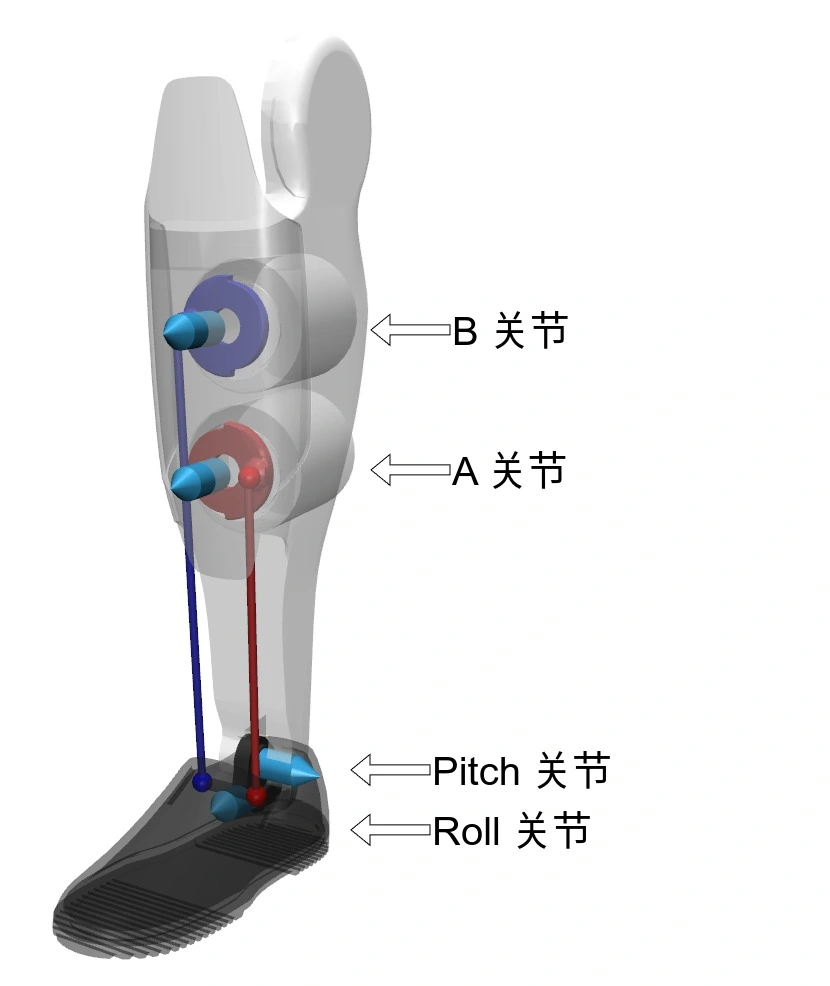

底层运动参考例程
底层运动开发例程实现了将机器人从任意初始关节位置，复位至零位，然后用两种不同模式控制 G1 机器人踝关节摆动，并且以一定频率打印欧拉角数据。例程源代码位于 unitree_sdk2/example/g1/low_level/g1_ankle_swing_example.cpp，可从 此处 访问，运行方式详见 《快速开发》。
G1 机器人踝关节控制模式

并联结构模型：G1脚踝并联结构
G1 踝关节采用并联机构，为用户提供了两种控制模式：
PR 模式：控制踝关节的 Pitch(P) 和 Roll(R) 电机 (默认模式，对应 URDF 模型)AB 模式：直接控制踝关节的 A 和 B 电机 (需要用户自己计算并联机构运动学)
因为 G1 机器人踝关节并联机构的 PR 与 AB 关节运动存在两组约束关系，所以踝关节实际只有两个自由度。硬件实现上，AB 关节处于主动控制 (电机直接驱动)，而 PR 关节处于从动状态。为实现PR 模式，我们采用间接调节 AB 关节从而实现对 PR 关节的控制。
G1 机器人腰部 Pitch 和 Roll 关节同样采用了并联机构，也提供了PR 模式和AB 模式两种控制模式。
代码解析
以下代码针对 G1 29dof 版本机型，其他版本机型的例程均在 unitree_sdk2 仓库。
核心类型与功能介绍
| 类型名称 | 描述 |
|---|---|
DataBuffer |
多线程数据缓存工具类 |
ImuState |
IMU 相关结构体 |
MotorCommand |
电机指令相关结构体 |
MotorState |
电机状态相关结构体 |
Mode |
G1 踝关节控制模式 |
G1JointIndex |
所有关节按名称排序索引 |
G1Example |
核心控制逻辑类 |
例程的主程序定义在 g1_ankle_swing_example.cpp 中，主程序实例化 G1Example 类。
在 G1Example 的构造函数中创建了两个线程和一个回调：
- 周期执行的底层指令发送线程，默认按照 500Hz 调用函数
G1Example::LowCommandWriter - 用户定义的控制逻辑线程，电机控线程，默认按照 500Hz 调用函数
G1Example::Control - 底层状态接收回调，调用函数
G1Example::LowStateHandler
具体如下代码所示：
G1Example(std::string networkInterface)
: time_(0.0),
control_dt_(0.002),
duration_(3.0),
mode_pr_(Mode::PR),
mode_machine_(0) {
ChannelFactory::Instance()->Init(0, networkInterface);
// create publisher
lowcmd_publisher_.reset(new ChannelPublisher<LowCmd_>(HG_CMD_TOPIC));
lowcmd_publisher_->InitChannel();
// create subscriber
lowstate_subscriber_.reset(new ChannelSubscriber<LowState_>(HG_STATE_TOPIC));
lowstate_subscriber_->InitChannel(std::bind(&G1Example::LowStateHandler, this, std::placeholders::_1), 1);
// create threads
command_writer_ptr_ = CreateRecurrentThreadEx("command_writer", UT_CPU_ID_NONE, 2000, &G1Example::LowCommandWriter, this);
control_thread_ptr_ = CreateRecurrentThreadEx("control", UT_CPU_ID_NONE, 2000, &G1Example::Control, this);
}
底层指令发送函数
G1Example::LowCommandWriter 用于周期性发送底层指令
void LowCommandWriter() {
LowCmd_ dds_low_command;
dds_low_command.mode_pr() = static_cast<uint8_t>(mode_pr_);
dds_low_command.mode_machine() = mode_machine_;
const std::shared_ptr<const MotorCommand> mc = motor_command_buffer_.GetData();
if (mc) {
for (size_t i = 0; i < G1_NUM_MOTOR; i++) {
dds_low_command.motor_cmd().at(i).mode() = 1; // 1:Enable, 0:Disable
dds_low_command.motor_cmd().at(i).tau() = mc->tau_ff.at(i);
dds_low_command.motor_cmd().at(i).q() = mc->q_target.at(i);
dds_low_command.motor_cmd().at(i).dq() = mc->dq_target.at(i);
dds_low_command.motor_cmd().at(i).kp() = mc->kp.at(i);
dds_low_command.motor_cmd().at(i).kd() = mc->kd.at(i);
}
dds_low_command.crc() = Crc32Core((uint32_t *)&dds_low_command, (sizeof(dds_low_command) >> 2) - 1);
lowcmd_publisher_->Write(dds_low_command);
}
}
底层状态接收回调函数
当接收到话题 rt/lowstate 的底层状态消息时，程序会自动回调 G1Example::LowStateHandler 函数。在回调函数中提取了电机的状态和 IMU 的状态。底层状态的结构体定义可参考 《底层服务接口》。
void LowStateHandler(const void *message) {
LowState_ low_state = *(const LowState_ *)message;
if (low_state.crc() != Crc32Core((uint32_t *)&low_state, (sizeof(LowState_) >> 2) - 1)) {
std::cout << "[ERROR] CRC Error" << std::endl;
return;
}
// get motor state
MotorState ms_tmp;
for (int i = 0; i < G1_NUM_MOTOR; ++i) {
ms_tmp.q.at(i) = low_state.motor_state()[i].q();
ms_tmp.dq.at(i) = low_state.motor_state()[i].dq();
if (low_state.motor_state()[i].motorstate() && i <= RightAnkleRoll)
std::cout << "[ERROR] motor " << i << " with code " << low_state.motor_state()[i].motorstate() << "\n";
}
motor_state_buffer_.SetData(ms_tmp);
// get imu state
ImuState imu_tmp;
imu_tmp.omega = low_state.imu_state().gyroscope();
imu_tmp.rpy = low_state.imu_state().rpy();
imu_state_buffer_.SetData(imu_tmp);
// update mode machine
if (mode_machine_ != low_state.mode_machine()) {
if (mode_machine_ == 0) std::cout << "G1 type: " << unsigned(low_state.mode_machine()) << std::endl;
mode_machine_ = low_state.mode_machine();
}
}
用户定义控制逻辑函数
G1Example::Control 实现了：
- 阶段 1：将 G1 机器人从任意初始关节位置，复位至零位 (程序启动的前 3秒)；
- 阶段 2：采用踝关节 PR控制模式控制踝关节持续摆动 3秒；
- 阶段 3：采用踝关节 AB控制模式控制踝关节持续摆动，一直到程序运行终止。
void Control() {
ReportRPY();
MotorCommand motor_command_tmp;
const std::shared_ptr<const MotorState> ms = motor_state_buffer_.GetData();
for (int i = 0; i < G1_NUM_MOTOR; ++i) {
motor_command_tmp.tau_ff.at(i) = 0.0;
motor_command_tmp.q_target.at(i) = 0.0;
motor_command_tmp.dq_target.at(i) = 0.0;
motor_command_tmp.kp.at(i) = Kp[i];
motor_command_tmp.kd.at(i) = Kd[i];
}
if (ms) {
time_ += control_dt_;
if (time_ < duration_) {
// [Stage 1]: set robot to zero posture
for (int i = 0; i < G1_NUM_MOTOR; ++i) {
double ratio = std::clamp(time_ / duration_, 0.0, 1.0);
motor_command_tmp.q_target.at(i) = (1.0 - ratio) * ms->q.at(i);
}
} else if (time_ < duration_ * 2) {
// [Stage 2]: swing ankle using PR mode
mode_pr_ = Mode::PR;
double max_P = M_PI * 30.0 / 180.0;
double max_R = M_PI * 10.0 / 180.0;
double t = time_ - duration_;
double L_P_des = max_P * std::sin(2.0 * M_PI * t);
double L_R_des = max_R * std::sin(2.0 * M_PI * t);
double R_P_des = max_P * std::sin(2.0 * M_PI * t);
double R_R_des = -max_R * std::sin(2.0 * M_PI * t);
motor_command_tmp.q_target.at(LeftAnklePitch) = L_P_des;
motor_command_tmp.q_target.at(LeftAnkleRoll) = L_R_des;
motor_command_tmp.q_target.at(RightAnklePitch) = R_P_des;
motor_command_tmp.q_target.at(RightAnkleRoll) = R_R_des;
} else {
// [Stage 3]: swing ankle using AB mode
mode_pr_ = Mode::AB;
double max_A = M_PI * 30.0 / 180.0;
double max_B = M_PI * 10.0 / 180.0;
double t = time_ - duration_ * 2;
double L_A_des = +max_A * std::sin(M_PI * t);
double L_B_des = +max_B * std::sin(M_PI * t + M_PI);
double R_A_des = -max_A * std::sin(M_PI * t);
double R_B_des = -max_B * std::sin(M_PI * t + M_PI);
motor_command_tmp.q_target.at(LeftAnkleA) = L_A_des;
motor_command_tmp.q_target.at(LeftAnkleB) = L_B_des;
motor_command_tmp.q_target.at(RightAnkleA) = R_A_des;
motor_command_tmp.q_target.at(RightAnkleB) = R_B_des;
}
motor_command_buffer_.SetData(motor_command_tmp);
}
}
欧拉角状态打印函数
G1Example::ReportRPY 用于周期性输出欧拉角数据。
void ReportRPY() {
const std::shared_ptr<const ImuState> imu = imu_state_buffer_.GetData();
if (imu) std::cout << "rpy: [" << imu->rpy.at(0) << ", " << imu->rpy.at(1) << ", " << imu->rpy.at(2) << "]" << std::endl;
}